Mark Chamberlain | DIGIT 100 | Corpus Analysis
I am comparing the first speeches given by three early presidents and three modern presidents when they took office. I want to see which words and phrases they repeated and how their speeches are different.
The texts come from our class text collection. I saved them in early and modern folders in my text lab on GitHub, outside the docs folder.
Click either screenshot to see it at full size.
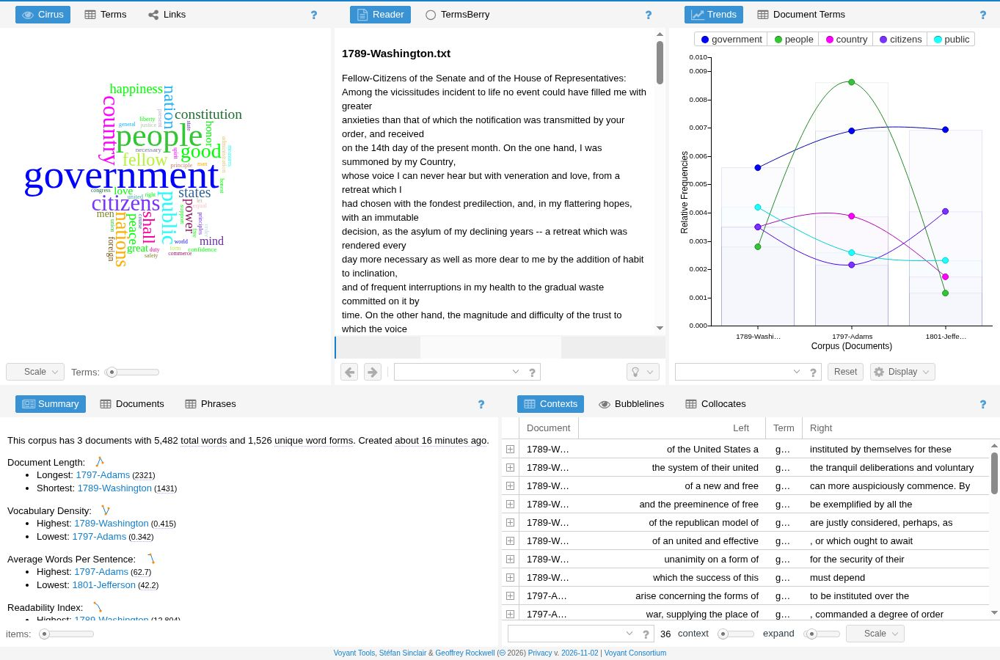
Government stands out the most in the early speeches. It appears 36 times. People appears 26 times, while country and citizens each appear 17 times. These words suggest that the presidents talked a lot about government and the people it serves. Reading the full sentences helps explain what they mean by government. Jefferson asks whether a republican government can be strong. Washington connects government with the liberties and happiness of the people. Both passages present government as something that needs to serve its citizens.
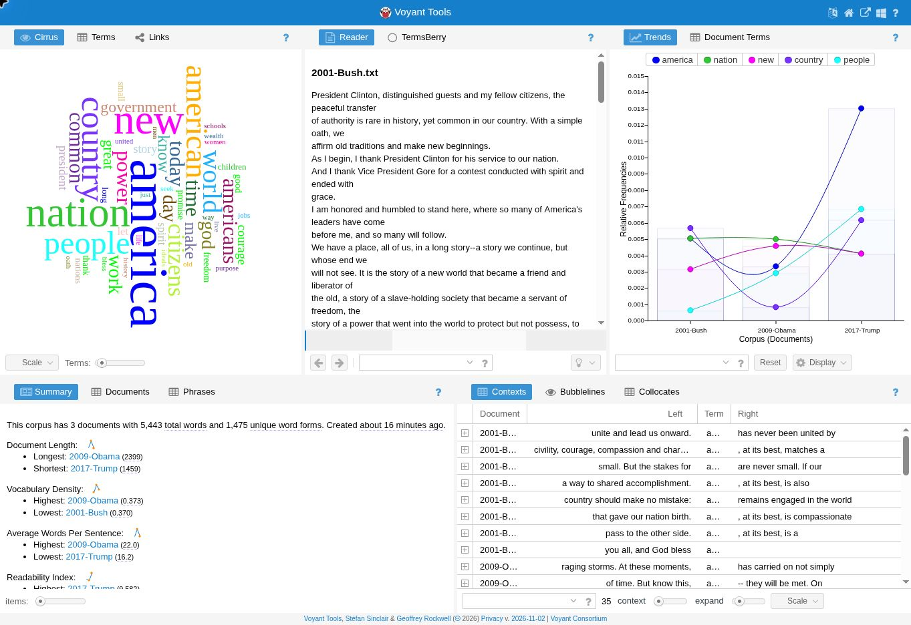
America stands out in the modern speeches. It appears 35 times, nation appears 26 times, and new appears 22 times. Country appears 20 times and people appears 18 times. These words make me think about America and its future. Both groups talk about the country and its people.
The two groups have almost the same number of words, which helps with the comparison. This is only a small sample, so I cannot say the results apply to every president.
An n-gram is a group of words used together. A 3-gram has three words. This table shows how often some three-word phrases appear in each group. These counts were calculated from the text files separately from Voyant. Capital letters are treated the same as lowercase letters, and common words are included.
| Three-word phrase | Early group | Modern group |
|---|---|---|
| of the people | 8 | 0 |
| my fellow citizens | 4 | 2 |
| and we will | 0 | 8 |
| we will not | 0 | 6 |
| men and women | 0 | 6 |
| together we will | 0 | 5 |
I checked which presidents used two of the phrases. John Adams used “of the people” seven times, and George Washington used it once. “And we will” was spread across all three modern speeches. George W. Bush and Donald Trump each used it twice, and Barack Obama used it four times.
This showed me that a phrase can look common because one person repeats it. Adams accounted for most of the early group's uses of “of the people,” while all three modern presidents used “and we will.”
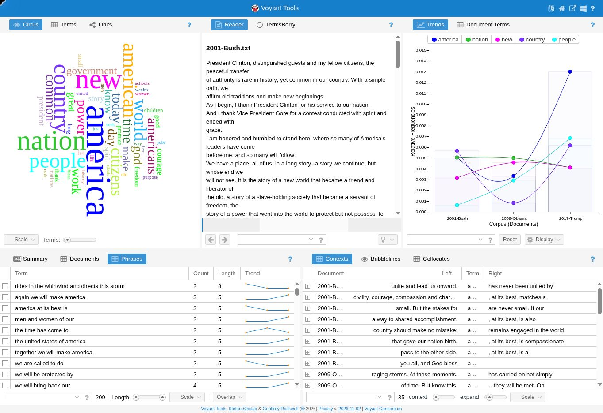
Trump used “we will bring back our” four times. Bush used “America at its best is” three times. Both repeated a phrase to make a point, but each had his own wording.
AntConc 3.5.9 was used to load the early and modern folders separately. The N-Grams option was selected with case sensitivity off, minimum frequency 1, and minimum range 1. Common words were kept. The experiments tested 2-word phrases, 3-word phrases, and a range of 4–5 words. Each file stays separate, so a phrase cannot run from the end of one president's speech into the next.
In the screenshots, frequency is the total number of matches. Range is the number of speeches containing the phrase. A phrase with a high frequency and a range of one may tell us more about one president than about the whole group.
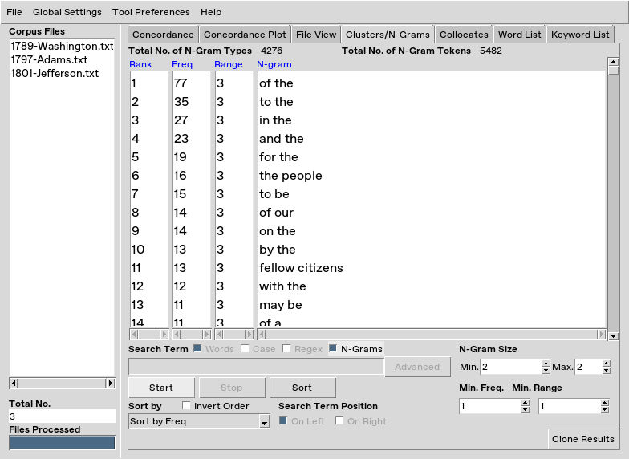
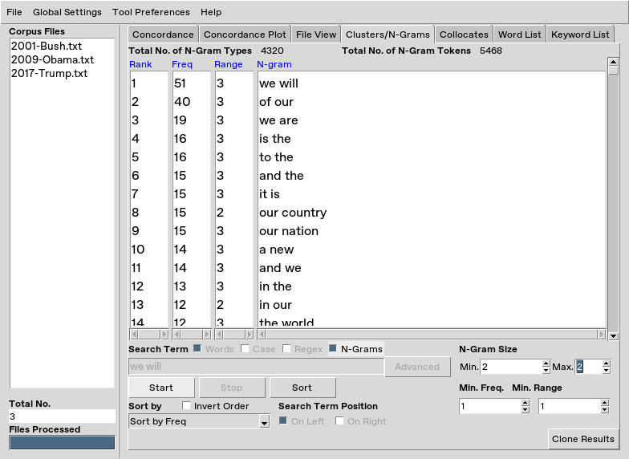
The early group's leading 2-gram is “of the,” with 77 matches across all three speeches. The modern group's leading 2-gram is “we will,” with 51 matches across all three speeches. “Of the” is a common part of English grammar, so its frequency alone tells me little about the topic. “We will” points toward future actions, but the surrounding words are needed to tell whether a speaker is making a promise, giving a warning, or describing a shared goal.
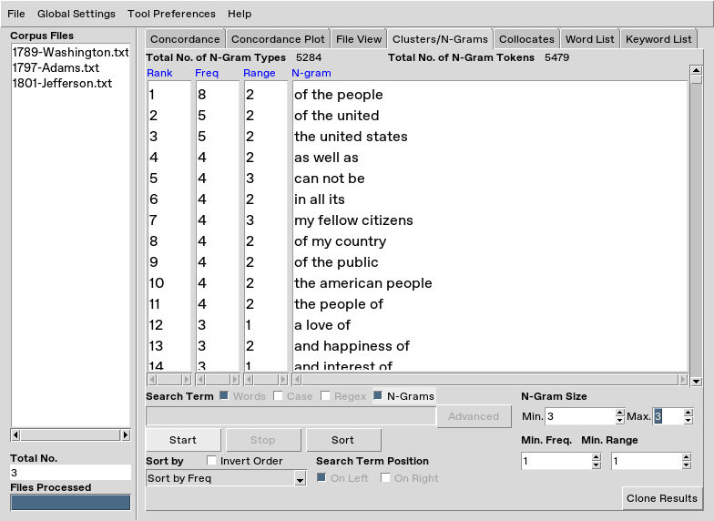
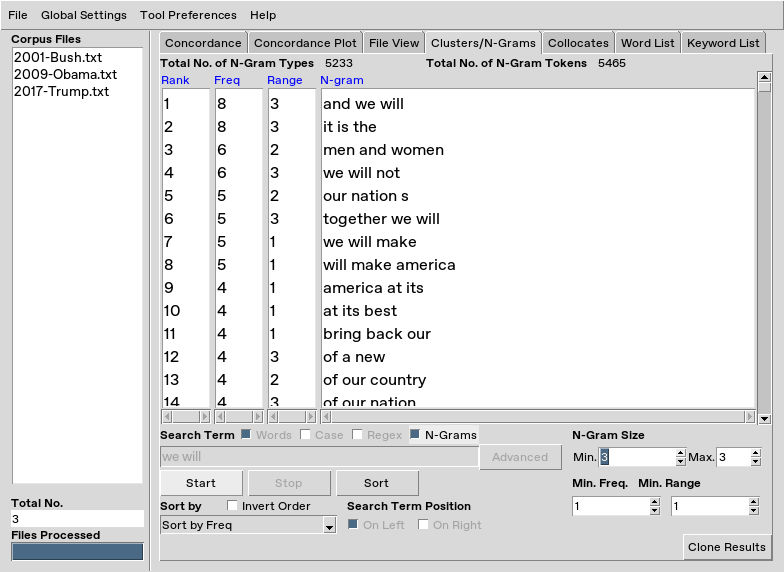
Changing to three words makes the comparison more specific. “Of the people” leads the early results with eight matches across two speeches. The modern phrase “and we will” has eight matches across all three speeches. “We will not” has six. These phrases suggest a stronger pattern of shared future action in this modern sample. They also show that promises can be expressed through refusal or warnings, as well as through positive plans.
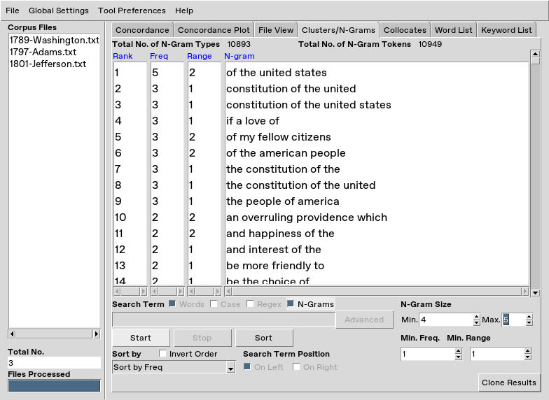
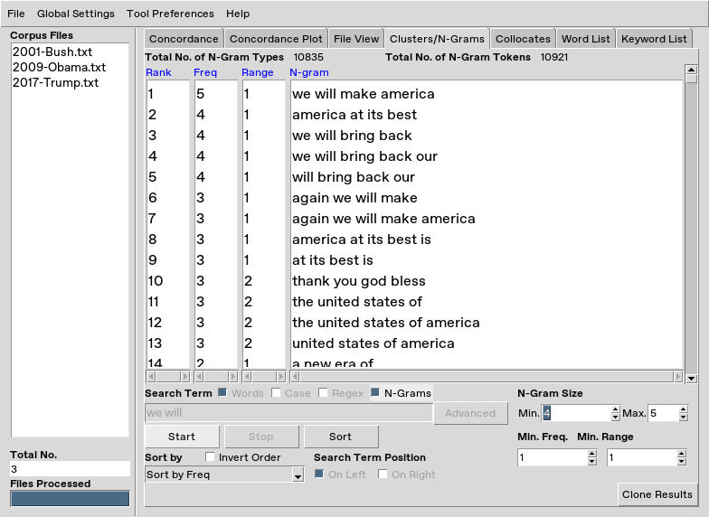
Longer phrases reveal individual styles. “Of the United States” occurs five times across Washington and Adams. Adams supplies all three uses of “constitution of the United States.” In the modern group, Trump supplies all five uses of “we will make America” and all four uses of “we will bring back our.” Bush supplies all four uses of “America at its best.” The modern group shares some short phrases, but the longer repeated wording often belongs to one speaker.
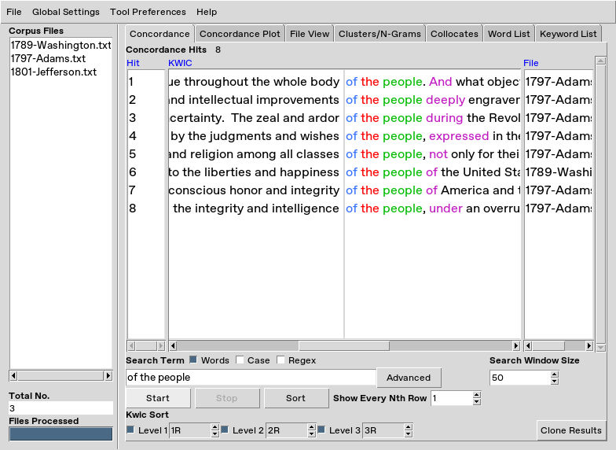
The early concordance shows seven of the eight matches for “of the people” in Adams and one in Washington. Adams uses it when discussing the people's intelligence, wishes, and role during the Revolutionary War. Washington connects it to the people's liberties and happiness. The phrase helps describe the relationship between citizens and government.
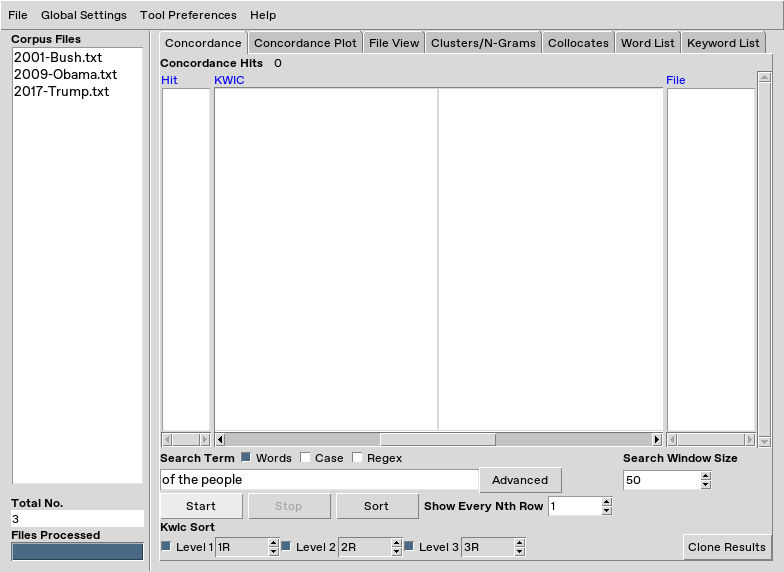
The same search returns zero matches in the modern group. That does not settle whether modern presidents care about the people. For example, Trump's speech says government should be “controlled by the people.” The wording changes while a similar idea remains. An exact phrase search needs to be followed by reading.
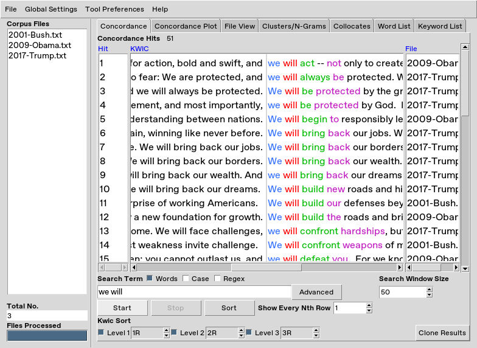
The modern concordance for “we will” has 51 matches. Obama follows it with actions such as building roads and bridges and restoring science. Trump repeats “we will bring back our” before jobs, borders, wealth, and dreams. Bush also uses the phrase in warnings about losing children's gifts and undermining their idealism. Repetition can create rhythm and a sense of shared responsibility, but these speakers use it for different subjects.
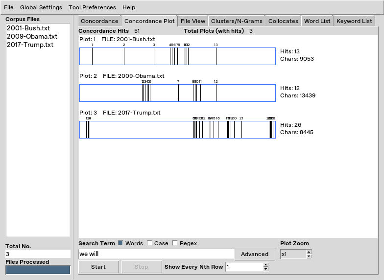
AntConc's Concordance Plot shows 13 matches for “we will” in Bush, 12 in Obama, and 26 in Trump. Each vertical mark shows a match's position in that speech. Trump's marks cluster in the later part and again at the end. Obama's first cluster is closer to the first third, where he lists actions for the economy and infrastructure. Bush has a cluster around the middle. The pattern helps show how repeated wording builds a passage, instead of assuming it is evenly spread through the whole speech.
Trump has the shortest modern speech in the text files but the most uses of “we will.” The contrast is therefore larger than the raw counts suggest. The repeated phrase occurs about 18 times per 1,000 words in Trump and about 5 times per 1,000 in Obama, using a separate lowercase word count as a check. These rounded rates support the pattern visible in the plot.
In these six speeches, the early group emphasizes government, citizens, and the country's political structure. The modern group uses more repeated wording about shared future action. Both groups still discuss the country and its people. Looking at longer phrases and full sentences made the comparison more useful than relying on word clouds alone.
These results describe six selected first inaugural addresses. Each group has only three presidents, and the modern presidents were chosen from different years and parties. Speech length, individual style, and the issues facing each president could all help explain the differences. The results suggest a pattern worth exploring with more speeches, rather than proving that every president in either period spoke the same way.
The six UTF-8 plain-text files are shared in the text lab linked above. They were copied from the class collection without edits. Voyant's word clouds use its automatic stop-word list, which removes common words. AntConc keeps common words for the phrase experiments. Different tools split punctuation and words differently, so totals can vary. The earlier phrase table uses a separate lowercase word calculation, while the AntConc screenshots document the tool's own results. Comparisons use the same settings within each tool.
Tools used were Voyant Tools and Laurence Anthony's AntConc. All AntConc images on this page are actual captures of the experiments. Click any screenshot to open the full image.
Open early speeches in Voyant | Open modern speeches in Voyant